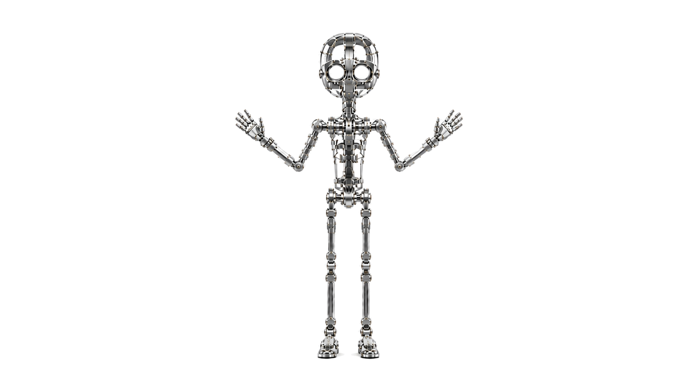
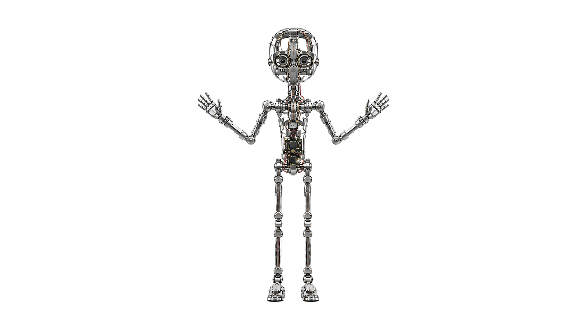
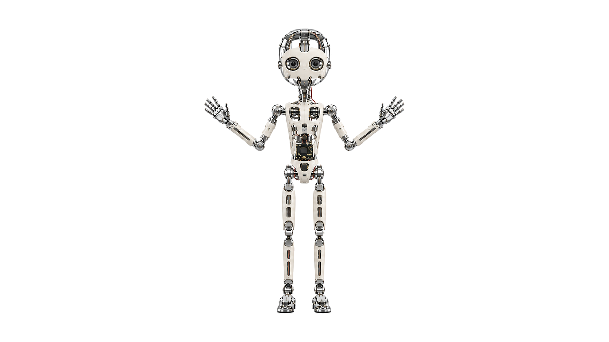
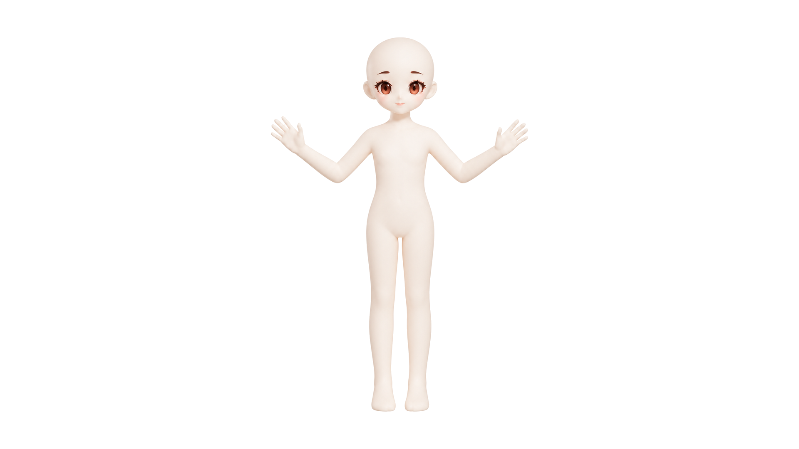
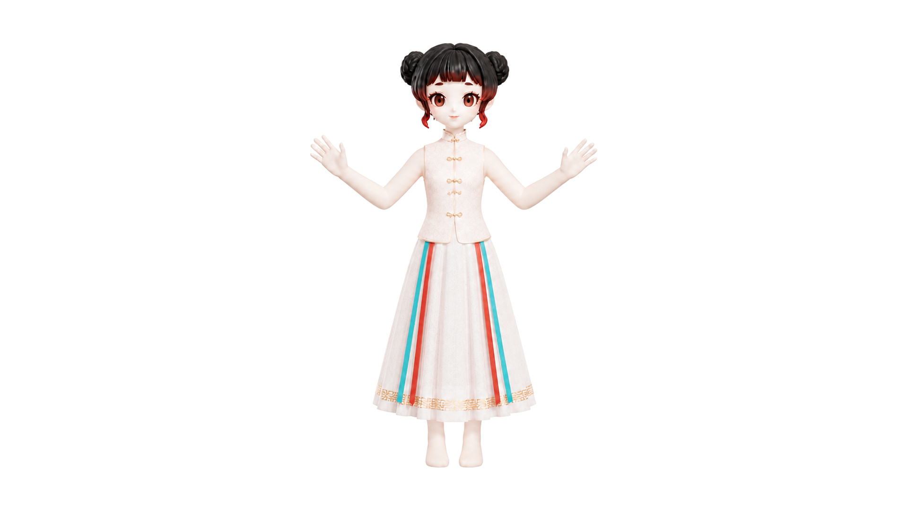
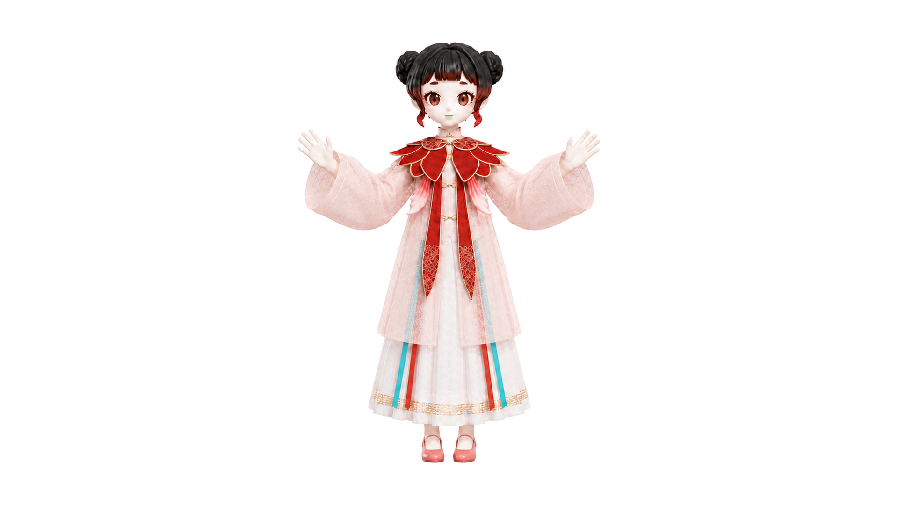
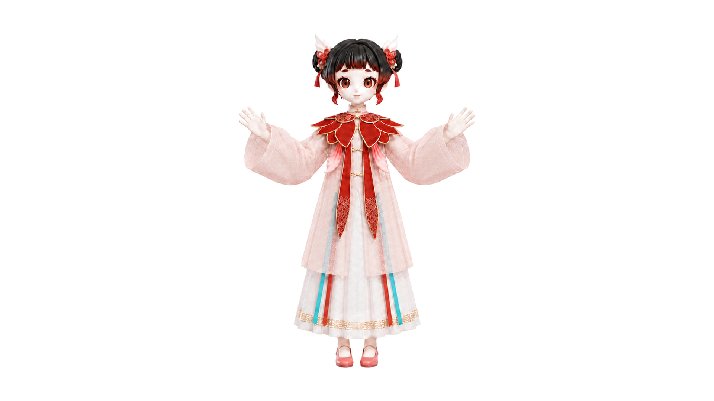
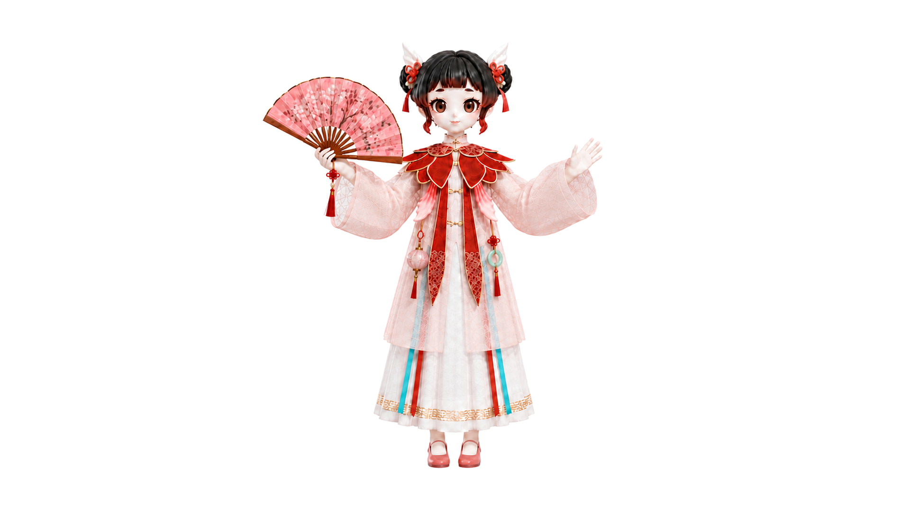

50
cm 小尺寸
50+
DOF 高自由度
极小物理空间的灵活运动
让 AI 第一次以「在场」的方式，走进你的生活：
汤问机器人不是偶尔被使用的功能玩具，而是融入生活的终端伙伴。它以自然在场、全维感知、深度推理与类人交互，贯通感知、推理与执行全链路；不只被动接收指令，而是在真实的工作、学习与独处场景中理解当下、自然回应，并在长期相处中持续养成。
既提供功能，又建立关系；既解决当下需求，又沉淀长期价值。
从工具，到伙伴，到生态。
极小物理空间的灵活运动
异构数据流的统一语义理解
从逻辑推理到物理执行的闭环
从机械结构到完整装扮——在侧栏滚动或点选，层与层自然消融切换。








自研微小回差伺服电机，覆盖全身关节与面部表情控制点。刚柔性材料结合设计高度还原角色形象，高互换性设计能够快速实现新角色替换。
集成 60+ 枚传感芯片，涵盖视觉、听觉、触觉、温度、距离、姿态、环境等感知维度。堆叠式 PCB 与端侧轻量化模型，实现毫秒级响应与全面内容输入。
主算力约 10 TOPS，10+ 集群协同，控制反馈带宽约 4 Mbps，100+ 元件仿人分布。技能应用商店与 OTA 让能力随用户成长；开放图形化编程与动作编辑器面向开发者生态。
九个维度同步采集，为深度认知提供最完整的信息支撑。
50Hz 实时规划刷新，位置精度 <0.4°、末端误差 <4mm。Text-to-Motion 将语言描述实时生成为动作（非预录播放）。语音、肢体与表情三维度协同输出。
进行多模态意图推理，读懂语义背后的内涵。多模型特征提取、基于文本的动作分类使情感表达更生动。数据库存储历史数据，成为最懂你的朋友。
从随口一句到情绪陪伴——汤问机器人在五个日常瞬间里真正在场。
| 产品名称 | 桌面级机器人智能体终端 | ||
|---|---|---|---|
| 型号 | T1 Ultra | T1 Pro | T1 |
| 产品尺寸 | 待公布 | 待公布 | 待公布 |
| 重量 | 1.5kg | 1.5kg | 1.5kg |
| 自由度 | 51（含13表情自由度） | 20（含5表情自由度） | 6（含3表情自由度） |
| 关节电机 | 自研微型伺服电机 | 自研微型伺服电机 | 自研微型伺服电机 |
| 表面皮肤 | 一体成型柔性皮肤 | 一体成型柔性皮肤 | 一体成型柔性皮肤 |
| AI算力 | 10+TOPS | 1TOPS | 无 |
| 视觉能力 | 双目视觉（可闭眼物理遮挡） | 双目视觉（可闭眼物理遮挡） | 无 |
| 语音能力 | 双麦阵列+扬声器 | 双麦阵列+扬声器 | 双麦阵列+扬声器 |
| 交互能力 | 多模态感知、连续可打断交互、生成式语音动作表情、柔顺物理接触交互、亲密度与性格养成 | 多模态感知、连续可打断交互、生成式语音动作表情、柔顺物理接触交互、亲密度与性格养成 | 语音输入、连续可打断交互、生成式语音动作表情、亲密度与性格养成 |
| 连接方式 | WiFi、蓝牙 | WiFi、蓝牙 | WiFi、蓝牙 |
| 散热系统 | 局部风冷散热 | 被动散热 | 被动散热 |
| 电源输入 | 36V 10A | 20V 4.5A | 9V 2.22A |
| 智能OTA升级 | 有 | 有 | 有 |
| 预计售价（含税） | ￥8,999 | ￥4,999 | ￥999 |
* 工程迭代中部分参数可能升级，正式量产规格以产品发布为准。